0
Sun - 6/6/2027
Depart Pittsburgh after work
Overnight travel
Airport meals and ground transport
GatewayPIT→EWR→FNC
United seasonal nonstop connection; confirm 2027
Overnight flight
Build-time Trip Composer
12 nights · 6/6/2027 to 6/20/2027 · estimated 30/50


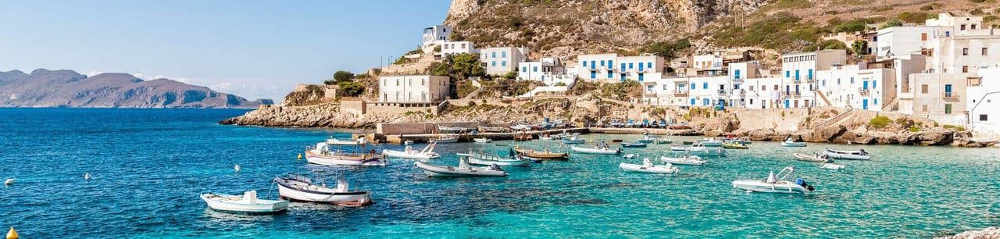
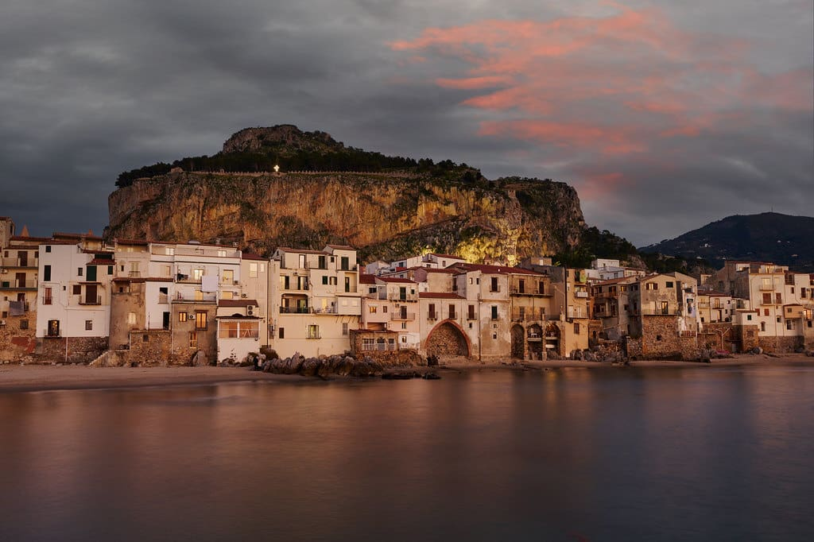

Estimated scorecard
PTO: 9 days. These axes are deterministic estimates, not audited evidence.
Day by day
Sun - 6/6/2027
Overnight travel
Airport meals and ground transport
United seasonal nonstop connection; confirm 2027
Mon - 6/7/2027
Soft landing
Est. $180-$320 - car pickup, cable car, simple dinner
Keep arrival deliberately easy: pick up the car, check in, then use the Monte cable car and toboggan as the jet-lag-proof kid hook. Confirm the operating day, eat early in the Zona Velha, and save the alpine start for a rested morning.
Cable car EUR 22 RT / EUR 16 one-way adult, ages 7-14 half price - one-way up for the family is ~EUR 48. Monte toboggan (2026 prices): EUR 40 per 2-person sled, cash only, closed Sundays - two sleds = EUR 80. Monte Palace garden EUR 18 adult, kids to 14 free.
June Funchal: 72-75 F days / 61-63 F nights, ~10 hours of sun and only ~5 rain days - one of the driest months on the island.
Family & picky-kid eats
Tue - 6/8/2027
The flagship hike
Est. $80-$220 - permits, fuel or transfer, lunch
The family version is the out-and-back from the Arieiro summit to Ninho da Manta and the staircase viewpoints (this first section is two-way; the full one-way traverse to Pico Ruivo is too strenuous for the 8-year-old). If the summit is in cloud, bail early and swap this with Saturday - that retry is exactly what the 4-night stay buys.


PR1 permit EUR 10.50 pp booked on SIMplifica (EUR 7 with a licensed operator); kids 12 and under free, so the family pays ~EUR 31.50. Summit parking free but full before sunrise on clear days. Shared sunrise transfer alternative: EUR 30-40 pp.
Pre-dawn summit (1,818 m): 41-50 F even in June - real jackets and hats. The sea-of-clouds inversion is a morning phenomenon; clouds typically swallow the peaks by afternoon. June is one of Madeira's driest months.
Family & picky-kid eats
Wed - 6/9/2027
Waterfall + village day
Est. $120-$240 - permits, shuttle, skywalk, dinner
Levada walking is the flat, kid-friendly lower-exposure counterpoint to the alpine ridge day: water channels, tunnels of green, and a waterfall pool payoff. Bail to the short Risco branch if the 8-year-old is done. End with fishing boats and the 580 m skywalk on the way home.


Permit EUR 4.50 pp (kids 12 and under free) = ~EUR 13.50 family, booked on SIMplifica. Rabacal parking free; the access-road shuttle is EUR 5 one-way / EUR 8 return, cash only.
June: the Rabacal plateau sits in the cloud belt - expect cooler, mistier air than Funchal and pack a layer. Trails are mostly flat levada walking with ~300 m of stairs near the falls.
Family & picky-kid eats


Camara de Lobos harbor is free. Cabo Girao skywalk is EUR 5 pp since Jan 2026, kids 12 and under free - plan EUR 15 worst case (whether the 13-year-old is exempt is ambiguous in current sources).
June: the sunny south coast - 72-75 F afternoons. Golden hour is the move: fishing boats glow and the 580 m cliff view softens after the tour buses leave.
Family & picky-kid eats
Thu - 6/10/2027
Otherworldly north coast
Est. $100-$220 - pools, lunch, fuel
This day has a double job: it is the ancient-forest-and-lava-pools loop, and it is the Arieiro backup slot. If Thursday's summit was clouded out, do the sunrise retry first and compress this loop into the afternoon. Fanal without fog is skippable; Porto Moniz is not.


Currently free, with a large free lot at the Fanal forestry post. Since Jan 2026 access is designated-paths-only with a daily visitor cap; a paid-entry model is under study - verify closer to travel.
June: Fanal sits at ~1,150 m in the cloud belt - fog is most likely in the morning and on humid days, and June afternoons often burn clear. The fog IS the show; a clear Fanal is just a pasture with old trees.
Family & picky-kid eats


EUR 3 pp for everyone age 3+ = EUR 12 family, open 9 am-7 pm in summer, with changing rooms, lockers, showers, lifeguards, and a snack bar. The rougher Cachalote pools on the west side are free.
June sea: ~70 F - brisk but swimmable, and the lava pools are calm even when the open Atlantic is rough. This is Madeira's one real swim stop.
Family & picky-kid eats
Fri - 6/11/2027
Weather and energy buffer
Flexible
Keep this day open for weather, rest, or a favorite Madeira repeat.
Sat - 6/12/2027
Flight transfer
Transfer included in madeira->sicily budget
Fly from the island to the buffer city and sleep near the onward gateway.
Sun - 6/13/2027
Flight transfer
Transfer included in madeira->sicily budget
Continue on the protected connection and settle into the next destination.
Mon - 6/14/2027
Water-heavy, low-cost day
Est. ~$190 · La Rocca + beach set/food
Make this the first full warm-water day: hike La Rocca while it is cool, then leave a long afternoon for the beach and an old-town dinner.
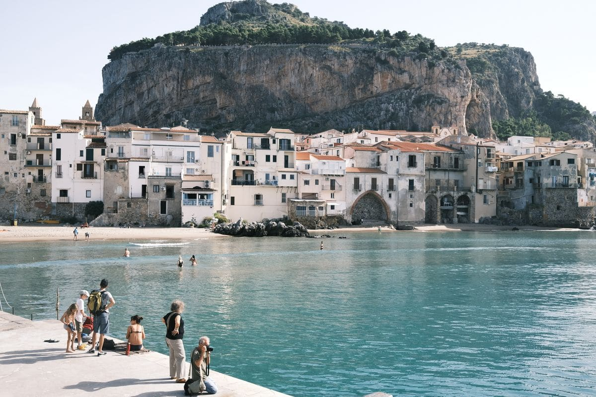
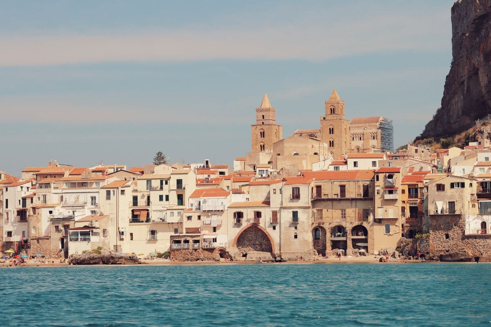
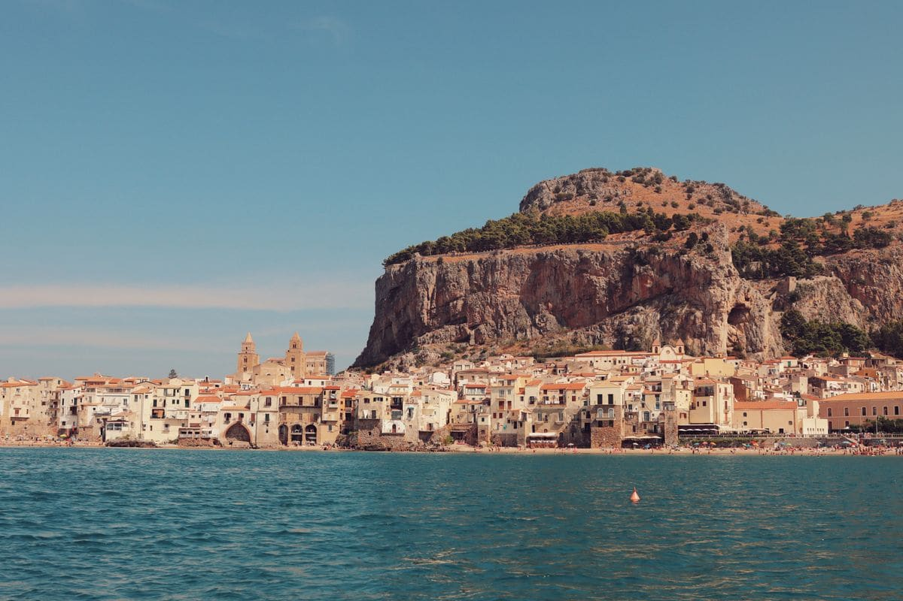
Beach/old town are free. La Rocca urban park is currently EUR5 full / EUR2.50 reduced ages 6-14; family estimate about EUR15.
Mid-June: warm coastal days, often upper 70s to low 80s F. Sea commonly runs about 72-75 F by mid/late June.
Family & picky-kid eats
Tue - 6/15/2027
Town/food with swim backup
Est. ~$260 · rail/parking + chapel option + meals
Palermo gives Sicily its city texture, but the day stays flexible because kids may prefer Mondello after two hot hours in town.
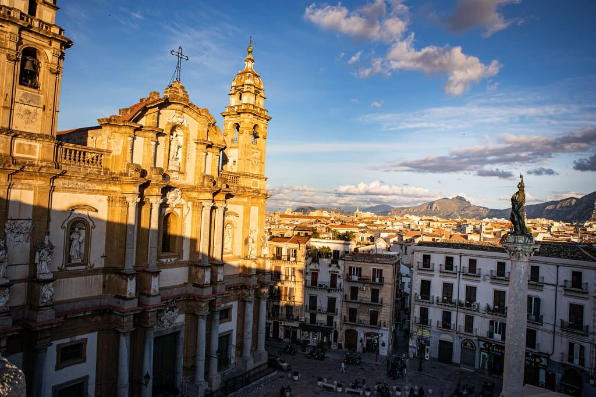
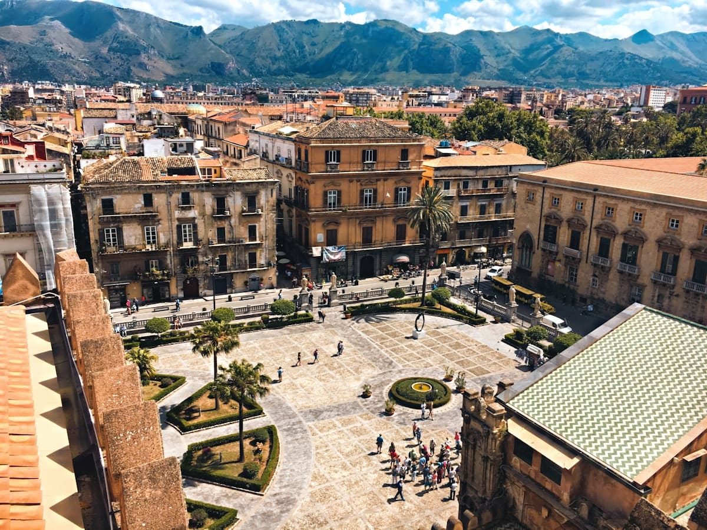
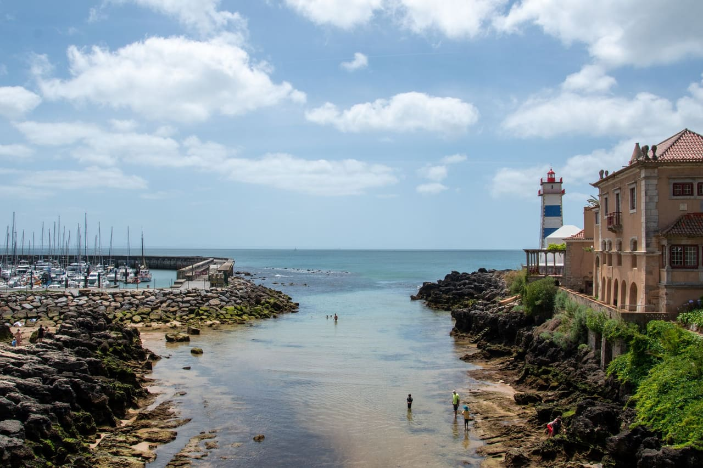
Street wandering is free. Palazzo dei Normanni / Palatine Chapel official current adult tickets vary by day/access; plan roughly EUR15.50-EUR19.50 adult and check the exact calendar.
June: Palermo is hotter and less breezy than Cefalù. Do culture early, then use Mondello for afternoon water if the city gets heavy.
Family & picky-kid eats
Wed - 6/16/2027
Nature + recovery swim
Est. ~$170-$420 · depends on cable car
Etna is the nature pillar, not an automatic expensive summit day. Check visibility and volcanic conditions before buying anything above the free crater walks.


Free Silvestri craters are the budget plan. Cable-car-only prices have been reported around EUR50 adult / EUR30 kids 5-10; 4x4/guided higher-slope options can push a family toward EUR250-EUR320.
Mountain day: cooler and windier than the coast. Visibility drives value; do not buy expensive summit options if clouds/ash are poor.
Family & picky-kid eats
Thu - 6/17/2027
Last full beach day
Est. ~$250 · beach set/boat + final dinner
End with water, not another town checklist. The whole point of handing swimming to Sicily was a real Mediterranean beach finish.
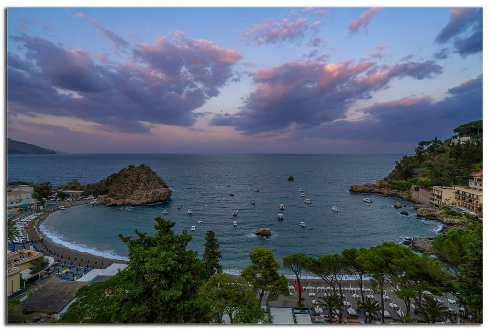
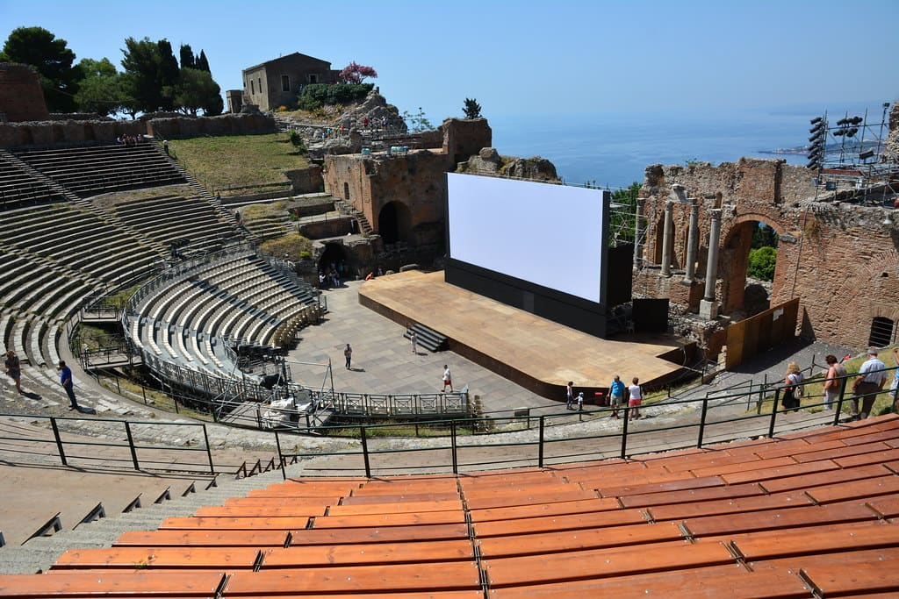
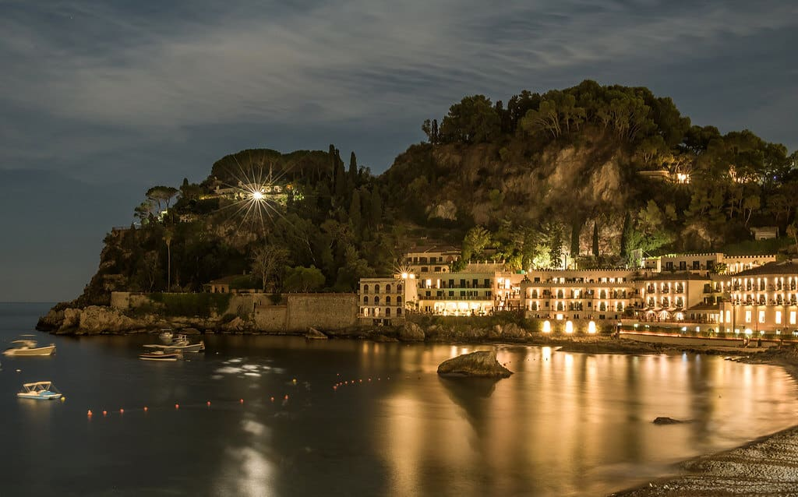
Ancient Theatre official current fare: EUR14 full / EUR7 reduced. Isola Bella beach is free; beach sets/boat extras vary.
Mid/late June: warm to hot, with Ionian water around 72-75 F.
Family & picky-kid eats
Fri - 6/18/2027
Weather and energy buffer
Flexible
Keep this day open for weather, rest, or a favorite Sicily repeat.
Sat - 6/19/2027
Return flight
Airport meals and transfers
Confirm protected transatlantic itinerary
Sun - 6/20/2027
Trip complete
—
Keep the next full day protected in Pittsburgh.
Route map
Destination and gateway points inherited from the source legs.
Estimated budget
| Madeira lodging | $815–$1315 |
|---|---|
| Madeira car/local transport | $336–$540 |
| Madeira food | $750–$1008 |
| Madeira activities | $300–$550 |
| Lisbon buffer lodging | $130–$200 |
| Mid-trip transfer | $1200–$2000 |
| Sicily lodging | $1176–$1650 |
| Sicily car/local transport | $539–$763 |
| Sicily food | $1225–$1428 |
| Sicily activities | $300–$650 |
| PIT outbound gateway | $3200–$4400 |
| PIT return gateway | $3000–$4000 |
Transfer watch
Confirm the exact 2027 operating day and prefer a protected itinerary where available.